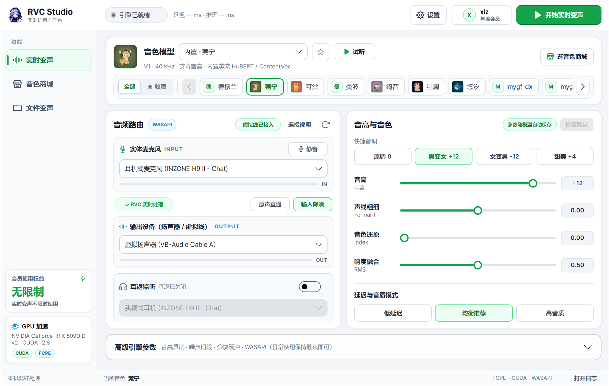
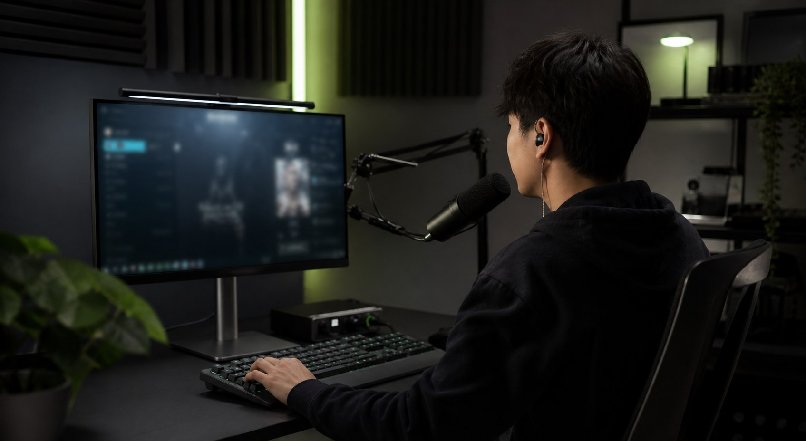

REAL-TIME VOICE
实时开麦变声，边说边调不打断
一键点「男变女」「女变男」「甜美」快速出声，按需在「低延迟 / 均衡推荐 / 高音质」间切换。耳返监听、原声直通、临时静音与输入降噪触手可及，每款音色调好的参数还会自动记住。
RVC Studio 把「音色商城试听、实时开麦变声、录音文件换声线」收进同一个简洁窗口。自带多款内置免费音色，本机 RTX 显卡加速处理，打开就能直达游戏、语聊、直播与配音。

从试听挑音色、游戏开黑实时开麦，到把现成录音一键换成另一个角色，全都在同一工作台里完成。
一键点「男变女」「女变男」「甜美」快速出声，按需在「低延迟 / 均衡推荐 / 高音质」间切换。耳返监听、原声直通、临时静音与输入降噪触手可及，每款音色调好的参数还会自动记住。
自带多款内置免费音色，点播放先听样音再一键使用；星标收藏固定到顶部快捷栏随时秒切，也支持在设置里导入自有 RVC 模型或 ZIP 包。
给短视频配音、播客或二创台词换角色不用重录。支持 MP3、WAV、M4A、FLAC、OGG、AAC（最长 3 分钟），转换后可直接对比原声并另存为 WAV。
内置虚拟音频线连接说明，轻松送入游戏、QQ、Discord 与 OBS；还可为开停变声、静音、原声直通及前 4 个收藏音色绑定全局快捷键，打游戏不手忙脚乱。
默认已配好清晰的日常参数；想精调声线时，可随时调节音高、声线粗细（Formant）、音色还原、响度混合，以及高级引擎降噪、门限与缓冲选项。
以下全部样音均由同一段干声录音，通过 RVC Studio 实时变声引擎本机推理生成。先点原声对照，再逐个切换感受不同声线。
同一句中文台词的原始干声，点击播放后再与下方变声结果直接对比。


支持直接导入本地 `.pth` / `.index` 或模型 ZIP 包，与内置音色统一管理。
实时变声、音色商城与文件变声集成在同一窗口，切换标签即可预览每个功能页面。
顶部直接试听和切换已收藏的常用音色，快捷音调与三档延迟/音质模式随手切换。
实体麦克风、虚拟线状态、原声直通、输入降噪与耳返监听沿信号流排列，接麦不迷路。
实时显示引擎状态、延迟与推理耗时、GPU 加速信息以及当日免费剩余时长。

你只需要专注于内容与互动。RVC Studio 负责把目标音色稳定送进正在使用的软件，或把现成台词快速转成成品配音。
第一次用虚拟声卡也能快速接通整条链路。
从内置免费音色或音色商城里先听样音，点「使用」即可加载，也可按需微调音调。
输入选实体麦克风，输出选耳机自测或 CABLE Input（安装向导可自动安装 VB-CABLE）。
在游戏、QQ、Discord 或 OBS 中将麦克风选为 CABLE Output，点击开始即可变声。
单文件离线安装包内含程序、Python、PyTorch CUDA 运行环境与默认音色，目标电脑无需额外折腾开发环境。
注：当前正式安装包专面向 NVIDIA RTX 显卡，暂不支持纯 CPU、AMD 或 Intel 核显运行。
查看完整要求与安装步骤遇到其他问题，可在 GitHub 查看完整排查文档或提交反馈。
不会。所有实时音频帧与文件变声推理均在你本机完成，声音数据不会上传到服务器。账号登录、会员同步、音色商城下载与版本检查需要联网。
可以。安装包已自带多款免费内置音色，打开就能先试听再开麦；你也可以在「音色商城」获取更多音色，或在「设置」里导入自己的 .pth / .index 或模型 ZIP 压缩包。
未开通会员时，每台设备每天有 1 小时免费实时变声额度，只有点击「开始实时变声」运行期间才会计时，并在本地时间次日 00:00 自动刷新。开通会员后，有效期内实时变声不限时，并可使用商城里的会员专属音色。
安装程序可选一键安装标准版 VB-CABLE 虚拟音频线（装完需重启电脑）。在 RVC Studio 里将输出设备选为 CABLE Input，再去游戏或聊天软件的麦克风设置里选 CABLE Output，对方就能直接听到变声。
不需要提前装 Python 或 CUDA Toolkit，离线安装包已完整内置。显卡方面，当前正式安装包仅支持 NVIDIA RTX 20/30/40/50 系列（建议驱动 572.61+），暂不支持 AMD 显卡、Intel 核显或纯 CPU 实时运行。
前往最新版本发布页后，直接下载单文件 RVC-Studio-NVIDIA-Setup.exe 即可，无需分卷。由于个人开源项目安装包暂未购买商业代码签名证书，Windows SmartScreen 可能会弹出未知发布者提醒；发布页提供 SHA256SUMS.txt 供校验，且内置的 VB-CABLE 驱动保留了官方数字签名。